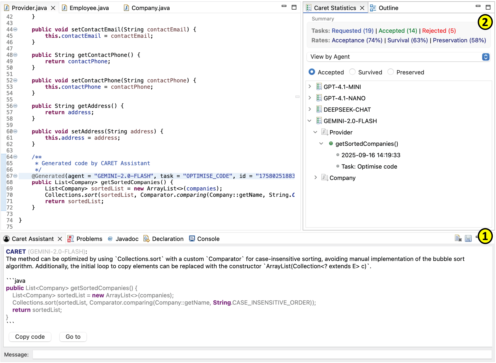

CARET
We present a CARET, which is a Java software developer assistant built on an extensible and flexible architecture. Large Language Models (LLMs) are the backbone of chatbots like ChatGPT, and are used to assist in all sort of domains. Following this trend, we are witnessing proposals of LLM-based assistants for coding tasks. However, current IDEs lack mechanisms tailored to facilitate the integration of such assistants, from how to interact with them to how to apply their suggestions without leaving the environment. To fill this gap, we present an extensible architecture for the definition of assistance tasks based on LLMs, and their binding to IDE commands and natural language prompts.
